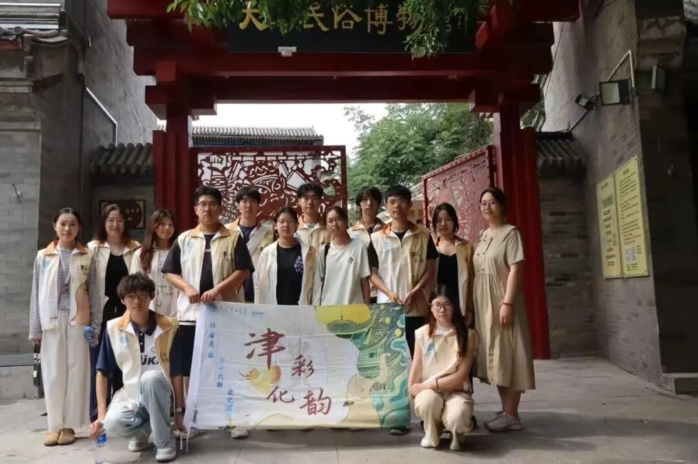
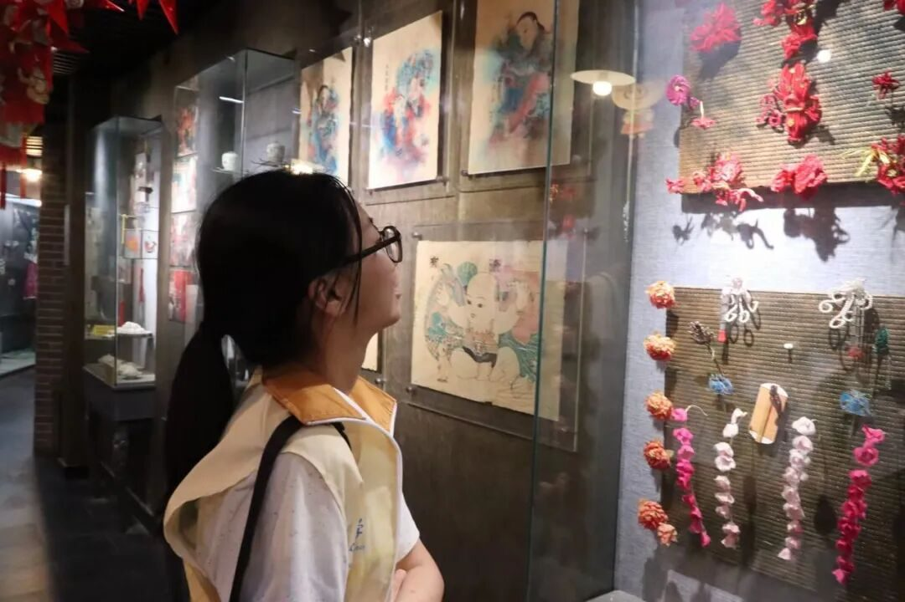
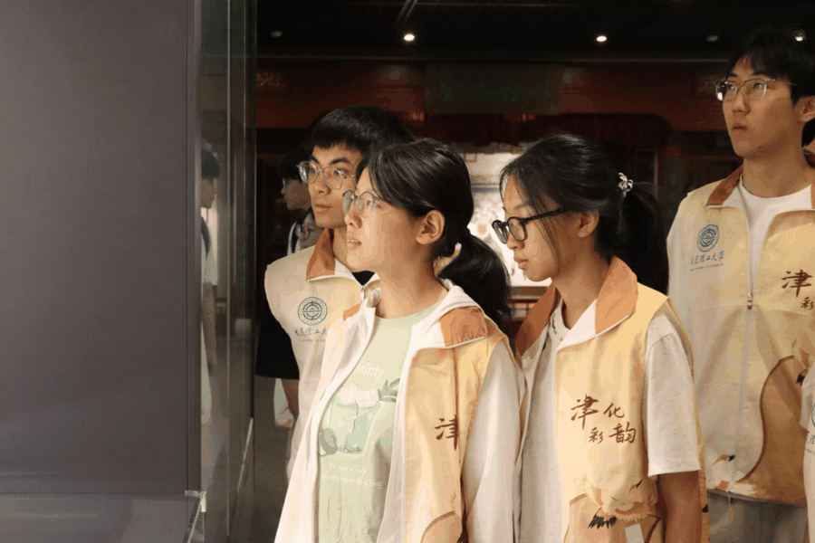
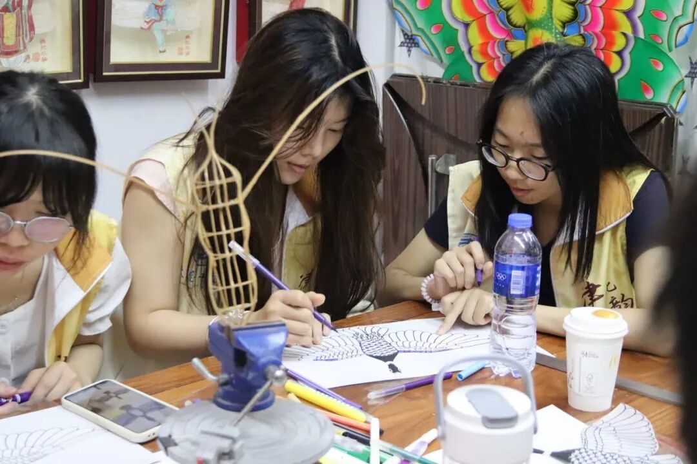
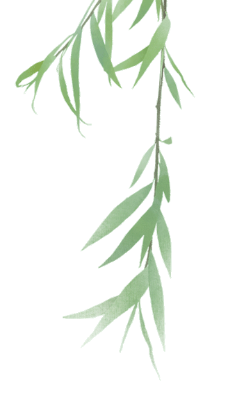
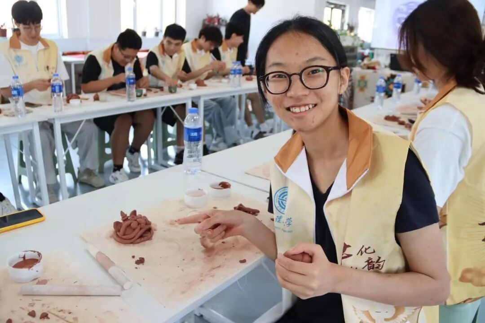
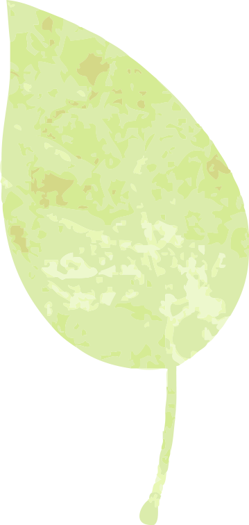

【行者无疆·津彩化韵】个人实践感悟——周子斐


行者无疆
津彩化遗
和行者无疆实践团在天津，一起度过了四天半的时间，真的舍不得结束。这几天里我们走了很多地方，接触了好几种非遗技艺：在王氏泥塑捏泥人、在面塑坊一起捏了哪吒、去看杨柳青的木版年画展、亲手做了葫芦烙画、最后还在风筝魏学着做一只小风筝。每一项都很新鲜。但也都不简单 。
印象特别深的是捏泥人和葫芦烙画。一开始看师傅操作都觉得好像不难，结果到自己手上就完全不是那么回事。尤其是烙画，要控制温度、手劲、下笔的节奏，全靠感觉，慢一点糊了，快一点就浅了。那一瞬间真挺佩服那些一直坚持做这件事的匠人。


还有年画，老实说，之前只是听说过“杨柳青年画”，但真正走进去看展览时，那种浓烈又喜气的色彩，还有每张画后面那些民俗故事，真的会觉得——原来我们小时候看到的很多“年味”，其实是这么传下来的。
这几天我们学得很开心，不只是用眼睛看。当你真的动手做、认真听、认真学，你会发现这些“老东西”其实是很有力量的。它们不是过去，而是在今天依然活着，只是可能我们之前没注意。
每一项非遗背后都有一群人在默默守着，这份执着让我们都很感动的。我们这次只是体验了一下皮毛，但也多多少少理解了什么叫“传承不易”。现在再看到“非遗”这两个字，不会只是路过，而是会停下来、多看一眼。
四天半，说长不长，但收获很多。很高兴这段旅程和你们一起走过。以后再看到陶塑、年画、风筝、葫芦，我大概都会想到天津，也会想到我们一起坐在小凳子上，捏泥、画画、笑着手忙脚乱的样子。


行者无疆


来源 | 行者无疆实践团
图片 | 行者无疆实践团
文字 | 周子斐
编辑 | 张瑶琪
审核 | 张瑶琪 李凌志 杩健辉
责编 | 邹靓靓 周 亮